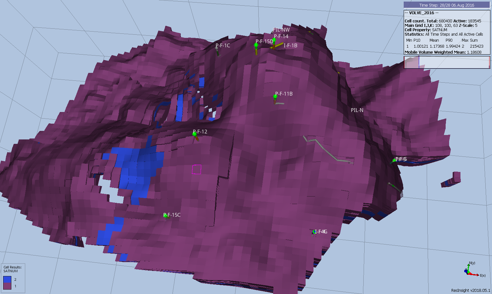
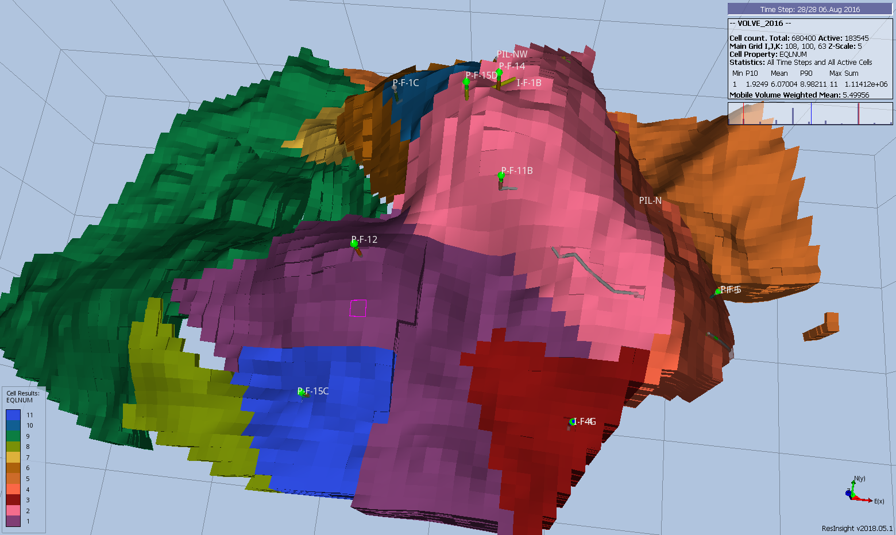

10 REGIONS SECTION
10.1 Introduction
The REGIONS section defines how various properties in the PROPS and SOLUTION sections are allocated to individual cells within the model, as well as defining various fluid in-place reporting regions. This is accomplished by assigning an integer value to each cell that represents the data set of the property to be assigned to the grid block.
10.2 Keyword Definitions
10.3 Data Requirements
OPM Flow, like most numerical modeling software, uses a default value of one for the various region arrays and thus if there is only one PVT data set for example, then there is no need to define the region array associated with allocating the PVT tables (via the PVTNUM keyword in the REGIONS section), as all cells will be allocated PVT table number one. However, if there are more than one PVT table entered in the PROPS section and PVTNUM is not defined in the model, then PVT tables greater than one will not be used and there will be no warning message indicating the fact.
Table 9.1 summarizes the various property region data and their associated keywords.
| No. | REGIONS Keyword | Standard Property Regions | Property Section |
|---|---|---|---|
| 1 | EQLNUM | EQLNUM – Define the Equilibration Region Numbers. Equilibrium region allocation based on the EQUIL keyword in the SOLUTION section. | SOLUTION |
| 2 | FIPNUM | FIPNUM – Define the Fluid In-Place Region Numbers. Fluid In-Place reporting via the FIPNUM array that divides the model into different fluid in-place reporting regions. | REGIONS |
| 3 | PVTNUM | PVTNUM – Define the PVT Regions. PVT table allocation of the DENSITY, PVDG, PVDO, PVTG, PVTO, PVCO, PVTW, and ROCK tables. | PROPS |
| 4 | SATNUM | SATNUM – Define the Saturation Table Region Numbers. Saturation (relative permeability) table allocation of the SGFN, SWFN, SOF2, SOF3, SGOF, and SWOF tables. This array is for the standard drainage, as oppose to the imbibition curves, used in all models. There are separate region arrays for alternative relative permeability curves. | PROPS |
| Function Specific Regions | |||
| 5 | ENDNUM | ENDNUM – Define the End-Point Scaling Depth Region Numbers. ENPTVD and ENKRVD versus depth table allocation for when ENDSCALE option has been activated in the RUNSPEC section. | PROPS |
| 6 | FIP | FIP – Define the Fluid In-Place Names and Region and Numbers. Fluid In-Place reporting via the FIP array that divides the model into different fluid in-place reporting regions. | REGIONS |
| 7 | FIPOWG | FIPOWG – Activate Oil, Gas, and Water FIP Zone Reporting. Fluid In-Place reporting for the total oil, gas, and water in the model. There is no region property array for this keyword, as the simulator calculates the total phase volumes based on the contacts entered via the EQUIL keyword in the SOLUTION section. | REGIONS |
| 8 | HBNUM | HBNUM – Define Herschel-Bulkley Region Numbers. Herschel-Bulkley rheological property table region numbers. | PROPS |
| 9 | HWSNUM | HWSNUM – Define the Saturation Table Region Numbers (High Salinity and Water Wet). High salinity water wet saturation table allocation using the high salinity water wet saturation SWFN and SOFN tables. This is an alias for the SURFWNUM property region which is also not supported by OPM Flow. | PROPS |
| 10 | IMBNUM | IMBNUM – Define the Imbibition Saturation Table Region Numbers. Imbibition saturation table allocation of the SWFN, SOF2, SOF3, or SWOF imbibition tables. | PROPS |
| 11 | IMBNUMMF | IMBNUMMF – Define the Imbibition Saturation Table Region Numbers (Matrix-Fracture). Imbibition saturation tables region numbers for flow between the matrix and fracture blocks, for when the Hysteresis option has been activated in Dual Porosity or Dual Permeability runs. | PROPS |
| 12 | KRNUM | KRNUM – Define the Directional Saturation Table Region Numbers. Direction dependent saturation tables region numbers for when Directional Dependent Saturation Function option has been activated by the DIRECT parameter on the SATOPTS. | PROPS |
| 13 | KRNUMMF | KRNUMMF – Define the Saturation Table Region Numbers (Matrix-Fracture). Drainage saturation tables region numbers for flow between the matrix and fracture blocks in a Dual Porosity or Dual Permeability model. | PROPS |
| 14 | LSLTWNUM | LSLTWNUM – Define the Low Salt Water Wet Saturation Table Region Numbers. Low salt water wet saturation tables region numbers for when the Low Salinity option for the Brine model and the Surfactant Wettability option have been activated for the model. | PROPS |
| 15 | LSNUM | LSNUM – Define the Low Salt Oil Wet Saturation Table Region Numbers. Low salt oil wet saturation tables region numbers for the Low Salinity Brine model. | PROPS |
| 16 | LWSLTNUM | LWSLTNUM – Define the Low Salt Oil Wet Saturation Table Region Numbers. Low salt oil wet saturation table region numbers for the Low Salinity Brine model. | PROPS |
| 17 | LWSNUM | LWSNUM – Define the Low Salt Water Wet Saturation Table Region Numbers. Low salt water wet saturation table region numbers for when the Low Salinity option for the Brine model and the Surfactant Wettability option have been activated for the model. | PROPS |
| 18 | MISCNUM | MISCNUM – Define the Miscibility Region Numbers. Miscible regions based on the TLMIXPAR records when the MISCIBLE or SOLVENT keywords have been activated in the RUNSPEC section. | PROPS |
| 19 | OPERNUM | OPERNUM – Define Regions for Mathematical Operations on Arrays. OPERATER keyword region numbers that can also be used with the EQUALREG, ADDREG, COPYREG, MULTIREG, MULTREGP, and MULTREGT keywords, as well as the OPERATER keyword in calculating various grid properties in the GRID and REGIONS section. | GRID EDIT PROPS REGIONS SOLUTION |
| 20 | PENUM | PENUM – Define the Petro-Elastic Region Numbers. Petro-elastic region numbers for petro-elastic coefficients, bulk modulus functions and shear modulus functions. | PROPS |
| 21 | PLMIXNUM | PLMIXNUM – Define the Polymer Region Numbers. Polymer region numbers for the mixing tables, and the maximum polymer and salt concentrations for the Polymer option. | PROPS |
| 22 | RESIDNUM | RESIDNUM – Define Vertical Equilibrium Residual Flow Region Numbers. Vertical Equilibrium residual flow calculation saturation tables or when region numbers for the Vertical Equilibrium option. | PROPS |
| 23 | ROCKNUM | ROCKNUM – Define Rock Compaction Table Region Numbers. Rock compaction table allocation for when the ROCKCOMP keyword as been activated in the RUNSPEC section, that allocates the ROCKTAB series of tables to a cell. | PROPS |
| 24 | SURFNUM | SURFNUM – Define the Surfactant Miscible Saturation Table Region Numbers. Surfactant saturation (relative permeability) tables allocation allocating the SWFN, SOF2, SOF3, or SWOF as miscible tables. | PROPS |
| 25 | SURFWNUM | SURFWNUM – Define the Saturation Table Region Numbers (High Salinity and Water Wet). High salinity water wet saturation table allocation using the high salinity water wet saturation SWFN and SOFN tables. | PROPS |
| 26 | TNUM | TNUM – Define Passive Tracer Concentration Regions. Partitioned Tracer option region numbers for this option. | PROPS |
| 27 | TRKPF | TRKPF – Define Partitioned Tracer Regions. Defines the regions associated with partition tracers and the partitioning tables allocated to grid blocks for when the Partitioned Tracer option has been enabled by the PARTTRAC keyword in the RUNSPEC section. | PROPS |
| 28 | WH2NUM | WH2NUM – Define WAG Hysteresis Saturation Table Region Numbers (Two Phase). Two phase Water-Alternating-Gas (“WAG”) hysteresis saturation table region numbers for when the hysteresis option has been activated by the WAGHYSTR variable on the SATOPTS keyword in the RUNSPEC. | PROPS |
| 29 | WH3NUM | WH3NUM – Define WAG Hysteresis Saturation Table Region Numbers (Three Phase). Three phase WAG hysteresis saturation table region numbers for when the hysteresis option has been activated by the WAGHYSTR variable on the SATOPTS keyword in the RUNSPEC. | PROPS |
| Notes: |
Table 9.1: REGIONS Section Allocation Array Summary
Earth modeling software may export the region arrays to be loaded into the simulator with values starting from zero instead of one. This may result in an error message if these cells are active in the model, if the cells are inactive then the zero values will be ignored by the simulator.
A complete property data set associated with a region keyword is required for each region number allocated to the cells. For example, if the fluid properties for the model are the same (for example, PVTO and PVDG keyword data), but the rock compressibility is varying with depth resulting in, say three different ROCK keyword records, then there has to be three PVTNUM regions and three complete PVT data sets in order to allocate the three ROCK records. This would mean that the PVTO and PVDG records, in this instance, would have to be repeated three times to match the three ROCK keyword records.


Example SATNUM and EQLNUM arrays from the Volve [The Volve Data was approved for data sharing in 2018 by the initiative of the last Operating company, Equinor and approved by the license partners ExxonMobil E&P Norway AS and Bayerngas Norge AS in the end of 2017.] field are displayed in Figure 9.1 and Figure 9.2, respectively.


10.4 Keyword Definitions
10.4.1 ADD – Add a Constant to a Specified Array
The ADD keyword adds a constant to a specified array or part of an array. The constant can be real or integer depending on the array type; however, the arrays that can be operated on is dependent on which section the ADD keyword is being applied.
See ADD – Add a Constant to a Specified Array in the GRID section for a full description.
10.4.2 ADDREG – Add a Constant to an Array based on a Region Number
The ADDREG keyword adds a constant to a specified array or part of an array based on cells with a specific region number. The region number array can be FLUXNUM, MULTNUM or OPERNUM and these arrays must be defined and be available before the ADDREG keyword is read by the simulator. The constant can be real or integer depending on the property array type; however, the property arrays that can be operated on is dependent on which section the ADDREG keyword is being used.
See ADDREG – Add a Constant to an Array based on a Region Number in the GRID section for a full description.
10.4.3 BOUNDARY – Define a Boundary Box for Printing
The BOUNDARY keyword defines a rectangular grid for printing various arrays to the output print file (*.PRT); thus, avoiding printing all the elements in the selected array.
See BOUNDARY – Define a Boundary Box for Printing in the GRID section for a full description.
10.4.4 BOX – Define a Range of Grid Blocks to Enter Property Data
BOX defines a range of grid blocks for which subsequent data is assigned for all the cells in the defined BOX. Note that the BOX grid is reset by the keyword ENDBOX by resetting the current defined BOX to be the whole grid. The keyword can be used for any array and for all grid types.
See BOX - Define a Range of Grid Blocks to Enter Property Data in the GRID section for a full description.
10.4.5 COLUMNS – Define Input File Column Margins
The COLUMNS keyword defines the input file column margins; characters outside the margins are ignored by the input parser.
See COLUMNS – Define Input File Column Margins in the GLOBAL section for a full description.
10.4.6 COPY – Copy Array Data to Another Array
The COPY keyword copies an array (or part of an array) to another array or part of an array. The arrays can be real or integer depending on the array type; however, the arrays that can be operated on is dependent on which section the COPY keyword is being used.
See COPY – Copy Array Data to Another Array in the GRID section for a full description.
10.4.7 COPYBOX – Copy Array Data Defined by a Box
The COPYBOX keyword copies an array (or part of an array) to part of the same array. The array can be real or integer depending on the array type; however, the arrays that can be operated on is dependent on which section the COPYBOX keyword is being used.
See COPYBOX – Copy Array Data Defined by a Box in the GRID section for a full description.
10.4.8 COPYREG – Copy an Array to Another Array based on a Region Number
The COPYREG keyword copies a specified array or part of an array based on cells with a specific region number to another array. The region number array can be FLUXNUM, MULTNUM or OPERNUM and these arrays must be defined and be available before the COPYREG keyword is read by the simulator. The property arrays can be real or integer depending on the property array type; however, the property arrays that can be operated on is dependent on which section the COPYREG keyword is being used.
See COPYREG – Copy an Array to Another Array based on a Region Number in the GRID section for a full description.
10.4.9 DEBUG – Define the Debug Data to be Printed to File
This keyword defines the debug data to be written to the debug file (*.DBG). This keyword is not supported by OPM Flow but has no effect on the results so it will be ignored.
See DEBUG – Define the Debug Data to be Printed to File in the GLOBAL section for a full description.
10.4.10 ECHO – Activate Echoing of User Input Files to the Print File
Turns on echoing of all the input files to the print file; note that this keyword is activated by default and can subsequently be switched off by the NOECHO activation keyword.
See ECHO – Activate Echoing of User Input Files to the Print File in the GLOBAL section for a full description.
10.4.11 END – Define the End of the Input File
This keyword marks the end of the input file and can occur in any section. Any keywords and data after the END keyword are ignored.
See END – Define the End of the Input File in the GLOBAL section for a full description.
10.4.12 ENDBOX – Define the End of the BOX Defined Grid
This keyword marks the end of a previously defined BOX sub-grid as defined by a previously entered BOX keyword. The keyword resets the input grid to be the full grid as defined by the NX, NY, and NZ variables on the DIMENS keyword in the RUNSPEC section.
See ENDBOX – Define the End of the BOX Defined Grid in the GRID section for a full description.
10.4.13 ENDFIN – End the Definition of a Local Grid Refinement
ENDFIN defines the end of a Cartesian or radial local grid refinement (“LGR”) definition and a LGR property definition data set.
See ENDFIN – End the Definition of a Local Grid Refinement in the GRID section for a full description.
10.4.14 ENDINC – Define the End of an Include File
This keyword marks the end of an include file specified on the INCLUDE keyword. When the ENDINC keyword is encountered in the INCLUDE file, input data is read from the next keyword in the current file. Any keywords and data after the ENDINC keyword in the INCLUDE file are ignored.
See ENDINC – Define the End of an Include File in the GLOBAL section for a full description.
10.4.15 ENDNUM – Define the End-Point Scaling Depth Region Numbers
| RUNSPEC | GRID | EDIT | PROPS | REGIONS | SOLUTION | SUMMARY | SCHEDULE |
|---|
10.4.15.1 Description
The ENDNUM keyword defines the end-point scaling depth table region numbers for each grid block. The end-point scaling depth tables for various regions are defined by the ENPVTD [This keyword is not supported by OPM Flow but would change the results if supported so the simulation will be stopped.] and the ENKRVD [This keyword is not supported by OPM Flow but would change the results if supported so the simulation will be stopped.] keywords in the PROPS section. In the RUNSPEC section the NTENDP variable on the ENDSCALE keyword defines the maximum number of depth tables.
| No. | Name | Description | Default |
|---|---|---|---|
| 1 | ENDNUM | ENDNUM defines an array of positive integers assigning a grid cell to a particular end-point scaling depth table region. The maximum number of ENDNUM regions is set by the NTENDP variable on the ENDSCALE keyword in the RUNSPEC section. | 1 |
| Notes: |
Table 9.2: ENDNUM Keyword Description
This keyword is not supported by OPM Flow but would change the results if supported so the simulation will be stopped.
10.4.15.2 Examples
The example below sets three ENDNUM regions for a 4 x 5 x 2 model.
--
-- DEFINE ENDNUM REGIONS FOR ALL CELLS
--
ENDNUM
2 2 1 1 2 2 1 1 1 1 1 1 1 1 1 1 1 1 1 1
3 3 1 1 3 3 1 1 1 1 1 1 1 1 1 1 1 1 1 1
/Alternatively the EQUALS keyword could be employed to accomplish the same task, that is:
--
-- ARRAY CONSTANT ---------- BOX ---------
-- I1 I2 J1 J2 K1 K2
EQUALS
ENDNUM 1 1* 1* 1* 1* 1* 1* / SET REGION 1
ENDNUM 2 1 2 1 2 1 1 / SET REGION 2
ENDNUM 3 1 2 1 2 2 2 / SET REGION 3
/10.4.16 ENDSKIP – Deactivate Skipping of Keywords and Input Data
The ENDSKIP keyword deactivates the skipping of keywords that was activated by the SKIP, SKIP100, or SKIP300 keywords. Each SKIP keyword should be paired with an ENDSKIP keyword.
See ENDSKIP – Deactivate Skipping of Keywords and Input Data in the GLOBAL section for a full description.
10.4.17 EOSNUM – Define the Equation of State Region Numbers
| RUNSPEC | GRID | EDIT | PROPS | REGIONS | SOLUTION | SUMMARY | SCHEDULE |
|---|
10.4.17.1 Description
The EOSNUM keyword defines the Equation Of State (EOS) region number for all the cells in the model via an array. The region number specifies which Equation Of State is used in each grid block. The keyword should only be used if the compositional mode has been requested using the COMPS keyword in the RUNSPEC section.
OPM Flow does not currently support the general compositional modeling formulation.
This keyword is not supported by OPM Flow but it will be parsed and its data ignored.
| No. | Name | Description | Default |
|---|---|---|---|
| 1 | EOSNUM | EOSNUM is an array of positive integers less than or equal to NMEOSR that define the EOS region number for each cell in the model. The NMEOSR variable on the TABDIMS keyword in the RUNSPEC section defines the number of EOS regions in the model. | 1 |
| Notes: |
Table 9.3.17.1: EOSNUM Keyword Description
10.4.17.2 Examples
The example below sets two EOSNUM regions for a 4 x 5 x 2 model.
--
-- DEFINE EOSNUM REGIONS FOR ALL CELLS
--
EOSNUM
20*1
20*2
/10.4.18 EQLNUM – Define the Equilibration Region Numbers
| RUNSPEC | GRID | EDIT | PROPS | REGIONS | SOLUTION | SUMMARY | SCHEDULE |
|---|
10.4.18.1 Description
The EQLNUM keyword defines the equilibration region numbers for each grid block. The equilibration data for various regions are defined in the SOLUTION section. For example, the EQUIL keyword in the SOLUTION section defines the initial pressures and fluid contacts for each equilibration region identified by the EQLNUM region array.
| No. | Name | Description | Default |
|---|---|---|---|
| 1 | EQLNUM | EQLNUM defines an array of positive integers assigning a grid cell to a particular equilibration region. The maximum number of EQLNUM regions is set by the NTEQUL variable on the EQLDIMS keyword in the RUNSPEC section. | 1 |
| Notes: |
Table 9.3: EQLNUM Keyword Description
10.4.18.2 Examples
The example below sets three EQLNUM regions for a 4 x 5 x 2 model.
--
-- DEFINE EQLNUM REGIONS FOR ALL CELLS
--
EQLNUM
2 2 1 1 2 2 1 1 1 1 1 1 1 1 1 1 1 1 1 1
3 3 1 1 3 3 1 1 1 1 1 1 1 1 1 1 1 1 1 1
/
Alternatively the EQUALS keyword could be employed to accomplish the same task, that is:
--
-- ARRAY CONSTANT ---------- BOX ---------
-- I1 I2 J1 J2 K1 K2
EQUALS
EQLNUM’ 1 1* 1* 1* 1* 1* 1* / SET REGION 1
EQLNUM’ 2 1 2 1 2 1 1 / SET REGION 2
EQLNUM’ 3 1 2 1 2 2 2 / SET REGION 3
/
10.4.19 EQUALREG – Sets an Array to a Constant by Region Number
The EQUALREG keyword sets a specified array to a constant for cells with a specific region number. The region number array can be FLUXNUM, MULTNUM or OPERNUM and these arrays must be defined and be available before the EQUALREG keyword is read by the simulator. The constant can be real or integer depending on the property array type; however, the property arrays that can be operated on is dependent on which section the EQUALREG keyword is being used.
See EQUALREG – Sets an Array to a Constant by Region Number in the GRID section for a full description.
10.4.20 EQUALS – Sets a Specified Array to a Constant
The EQUALS keyword sets a specified array or part of an array to a constant. The constant can be real or integer depending on the array type; however, the arrays that can be operated on is dependent on which section the EQUALS keyword is being used.
See EQUALS – Sets a Specified Array to a Constant in the GRID section for a full description.
10.4.21 EXTRAPMS – Activate Extrapolation Warning Messages
The EXTRAPMS keyword activates extrapolation warning messages for when OPM Flow extrapolates the PVT or VFP tables. Frequent extrapolation warning messages should be investigated and resolved as this would indicate possible incorrect data and may result in the simulator extrapolating to unrealistic values.
See EXTRAPMS – Activate Extrapolation Warning Messages in the GLOBAL section for a full description.
10.4.22 FILEUNIT – Activate Unit Consistency Verification
The FILEUNIT keyword defines the units of the data set, and is used to verify that the units in the input deck and any associated include files are consistent. The keyword does not provide for the conversion between different sets of units.
See FILEUNIT – Activate Unit Consistency Checking in the GRID section for a full description.
10.4.23 FIP – Define the Fluid In-Place Names and Region and Numbers
| RUNSPEC | GRID | EDIT | PROPS | REGIONS | SOLUTION | SUMMARY | SCHEDULE |
|---|
10.4.23.1 Description
The FIP keyword defines the fluid in-place name and the associated region numbers for each grid block. The simulator can print out summaries of the fluid in-place in each region, the current flow rates between regions, and the cumulative flows between regions. This keyword is not in the standard keyword format due to the fluid in-place name being concatenated to the keyword FIP to fully define the keyword.
Note that the total number of FIP and FIPNUM regions must be defined by the NMFIPR variable on the REGDIMS keyword, or the NTFIP variable on the TABDIMS keyword. Both keywords are in the RUNSPEC section.
| No. | Name | Description | Default |
|---|---|---|---|
| 1 | FIPNAME | A character string of up to eight characters, consisting of FIP as the first three characters followed by up to a five letter character string defining the fluid in-place’s name. | None |
| 2 | FIPNUM | FIPNUM defines an array of positive integers greater than or equal to one, that assigns a grid cell to a particular fluid in-place region named by FIPNAME. The maximum number of FIP and FIPNUM regions is set by the REGDIMS(NMFIPR) or the TABDIMS(NTFIP) keywords(variables) in the RUNSPEC section. If both REGDIMS(NMFIPR) and TABDIMS(NTFIP) have been defined then the maximum of the two is used. | 1 |
| Notes: |
Table 9.4: FIP Keyword Description
The keyword behaves the same as the FIPNUM keyword except the full name of the keyword, including the concatenated characters, are used as the property region name. For example, if we wish define a fluid in-place region name called UNIT, then the keyword would be FIPUNIT.
The commercial simulator prints out a fluid in-place report if the FIP option on the RPTSCHED keyword is set equal to three, that is: FIP=3. This option is currently not available in OPM Flow.
The region property data for FIP arrays can be written to the SUMMARY file, and the RSM file if requested, similar to the FIPNUM regions, with some caveats:
- Only SUMMARY keywords for regions may be used, that is the SUMMARY variable name must begin with the letter R.
- The SUMMARY variable name must consist of a character string length of exactly five characters, if less than five characters, then the “_” character should be used to fill out the SUMMARY variable name. For example, instead of RPRUNIT, use RPR__UNI, or instead of ROIPUNIT, use ROIP_UNI.
- Only the first three characters of the FIP region name should be concatenated with the SUMMARY variable name. This means if the FIP region name is UNIT, the FIP keyword would be FIPUNIT; however, to access the regional pressures for FIPUNIT, one should use RPR__UNI, or to access the regional oil in-place one would use ROIP_UNI.See also the FIPOWG keyword in the REGIONS section that automatically defines the fluid-in-place regions at the start of the run based the gas, oil and water zones at the time the model was initialized.
10.4.23.2 Example
The example below defines a region name of UNIT and sets three FIPUNIT regions for a 4 x 5 x 2 model.
--
-- DEFINE FIPUNIT FIP REGIONS FOR ALL CELLS
--
FIPUNIT
2 2 1 1 2 2 1 1 1 1 1 1 1 1 1 1 1 1 1 1
3 3 1 1 3 3 1 1 1 1 1 1 1 1 1 1 1 1 1 1
/The second example is based on the Norne model that defines two FIP regions based on geological layers and numerical layers using the EQUALS keyword.
-- FIPGL BASED ON GEOLOGICAL LAYERS
-- ARRAY CONSTANT ---------- BOX ---------
-- I1 I2 J1 J2 K1 K2
EQUALS
FIPGL 1 1 46 1 112 1 3 / Garn
FIPGL 2 1 46 1 112 4 4 / Not
FIPGL 3 1 46 1 112 5 5 / Ile 2.2
FIPGL 4 1 46 1 112 6 8 / Ile 2.1
FIPGL 5 1 46 1 112 9 11 / Ile 1
FIPGL 6 1 46 1 112 12 12 / Tofte 2.2
FIPGL 7 1 46 1 112 13 15 / Tofte 2.1
FIPGL 8 1 46 1 112 16 18 / Tofte 1
FIPGL 9 1 46 1 112 19 22 / Tilje
--
-- FIPNL BASED ON NUMERICAL LAYERS
--
FIPNL 1 1 46 1 112 1 1 / Garn 3
FIPNL 2 1 46 1 112 2 2 / Garn 2
FIPNL 3 1 46 1 112 3 3 / Garn 1w
FIPNL 4 1 46 1 112 4 4 / Not
FIPNL 5 1 46 1 112 5 5 / Ile 2.2
FIPNL 6 1 46 1 112 6 6 / Ile 2.1.3
FIPNL 7 1 46 1 112 7 7 / Ile 2.1.2
FIPNL 8 1 46 1 112 8 8 / Ile 2.1.1
FIPNL 9 1 46 1 112 9 9 / Ile 1.3
FIPNL 10 1 46 1 112 10 10 / Ile 1.2
FIPNL 11 1 46 1 112 11 11 / Ile 1.1
FIPNL 12 1 46 1 112 12 12 / Tofte 2.2
FIPNL 13 1 46 1 112 13 13 / Tofte 2.1.3
FIPNL 14 1 46 1 112 14 14 / Tofte 2.1.2
FIPNL 15 1 46 1 112 15 15 / Tofte 2.1.1
FIPNL 16 1 46 1 112 16 16 / Tofte 1.2.2
FIPNL 17 1 46 1 112 17 17 / Tofte 1.2.1
FIPNL 18 1 46 1 112 18 18 / Tofte 1.1
FIPNL 19 1 46 1 112 19 19 / Tilje 4
FIPNL 20 1 46 1 112 20 20 / Tilje 3
FIPNL 21 1 46 1 112 21 21 / Tilje 2
FIPNL 22 1 46 1 112 22 22 / Tilje 1
/Then in order to get the reservoir pressure for the regions and the in-place oil volumes SUMMARY variables written to the SUMMARY file, one would use the following SUMMARY variable names in the SUMMARY section
-- ==============================================================================
--
-- SUMMARY SECTION
--
-- ==============================================================================
SUMMARY
-- FIP REGION REPORTING
--
ROIP_GL
/
ROIP_NL
/
RPR__GL
/
RPR__NL
/Notice how the “_” character has been used to extend the SUMMARY variable name to five characters.
10.4.24 FIPNUM – Define the Fluid In-Place Region Numbers
| RUNSPEC | GRID | EDIT | PROPS | REGIONS | SOLUTION | SUMMARY | SCHEDULE |
|---|
10.4.24.1 Description
The FIPNUM keyword defines the fluid in-place region numbers for each grid block. The simulator can print out summaries of the fluid in-place in each region, the current flow rates between regions, and the cumulative flows between regions.
Note that the total number of FIPNUM and FIP regions must be defined by the NMFIPR variable on the REGDIMS keyword, or the NTFIP variable on the TABDIMS keyword. Both keywords are in the RUNSPEC section.
| No. | Name | Description | Default |
|---|---|---|---|
| 1 | FIPNUM | FIPNUM defines an array of positive integers greater than or equal to one, that assigns a grid cell to a particular fluid in-place region. The maximum number of FIPNUM and FIP regions is set by the REGDIMS(NMFIPR) or the TABDIMS(NTFIP) keywords(variables) in the RUNSPEC section. If both REGDIMS(NMFIPR) and TABDIMS(NTFIP) have been defined then the maximum of the two is used. | 1 |
| Notes: |
Table 9.5: FIPNUM Keyword Description
In most simulation models the FIPNUM array is used to define various regions in the model for fluid in-place reporting and to identify (or report) the flow between the different regions. When calibrating a model’s in-place volumes it would be useful to use the FIPNUM array combined with the MULTREGP keyword to accomplish this. However, the FIPNUM array cannot be used in the GRID section. A work around is to: The above work flow will ensure that both arrays and the reporting of fluid in-place regions are consistent.
10.4.24.2 Examples
The example below sets three FIPNUM regions for a 4 x 5 x 2 model.
--
-- DEFINE FIPNUM REGIONS FOR ALL CELLS
--
FIPNUM
2 2 1 1 2 2 1 1 1 1 1 1 1 1 1 1 1 1 1 1
3 3 1 1 3 3 1 1 1 1 1 1 1 1 1 1 1 1 1 1
/Alternatively the EQUALS keyword could be employed to accomplish the same task, that is:
--
-- ARRAY CONSTANT ---------- BOX ---------
-- I1 I2 J1 J2 K1 K2
EQUALS
FIPNUM 1 1* 1* 1* 1* 1* 1* / SET REGION 1
FIPNUM 2 1 2 1 2 1 1 / SET REGION 2
FIPNUM 3 1 2 1 2 2 2 / SET REGION 3
/
10.4.25 FIPOWG – Activate Oil, Gas, and Water FIP Zone Reporting
| RUNSPEC | GRID | EDIT | PROPS | REGIONS | SOLUTION | SUMMARY | SCHEDULE |
|---|
10.4.25.1 Description
The FIPOWG keyword activates automatic fluid in-place reporting based on the initial oil, gas and water zones defined by the initial equilibration. The fluid contacts on the EQUIL keyword in the SOLUTION section determine the reporting fluid category a grid cell belongs to. For example all grid cells with depths above the gas-oil contact on the EQUIL keyword will be assigned to the gas zone and reported accordingly. Similarly, grid cells with depths between the gas-oil contact and the water-oil contact will be assigned to the oil zone. And finally, grid cells with depths below the oil-water contact will be assigned to the water zone. The simulator can print out summaries of the fluid in-place in each region, the current flow rates between regions, and the cumulative flows between regions.
Note that the total number of FIP and FIPNUM regions must be defined by the NMFIPR variable on the REGDIMS keyword in the RUNSPEC section.
There is no data required for this keyword.
This keyword is not supported by OPM Flow but has no effect on the results so it will be ignored.
10.4.25.2 Example
--
-- ACTIVATE OIL, GAS, AND WATER FIP ZONE REPORTING
--
FIPOWGThe above example switches on automatic fluid in-place reporting based on the initial oil, gas and water zones defined by the initial equilibration.
10.4.26 FORMFEED – Defined the Print File Form-Feed Character
The FORMFEED keyword defines the form-feed character, or carriage control character, for the output print (.PRT) run summary (.RSM) files. The keyword should be place at the very top of the input file.
See FORMFEED – Defined the Print File Form-Feed Character in the GLOBAL section for a dull description.
10.4.27 GETDATA – Load and Assign Data Array from INIT or RESTART File
The GETDATA keyword loads a data array from a previously generated INIT or RESTART file and assigns the loaded array to either same array in the run or another array name.
See GETDATA – Load and Assign Data Array from INIT or RESTART Files in the GRID section for a full description.
10.4.28 HA – History Match End-Point Gradient Additive Modifier
The HA series of keywords defines the history match end-point gradient parameters used to set the additive cumulative end point data, for when the History Match Gradient option has been activated by the HMDIMS keyword in the RUNSPEC section.
See HA – History Match End-Point Gradient Additive Modifier in the PROPS section for a complete description.
10.4.29 HBNUM – Define Herschel-Bulkley Region Numbers
| RUNSPEC | GRID | EDIT | PROPS | REGIONS | SOLUTION | SUMMARY | SCHEDULE |
|---|
10.4.29.1 Description
The HBNUM keyword defines the Herschel-Bulkley rheological property table region numbers for each grid block, as such there must be one entry for each cell in the model. The region number specifies which table of Herschel-Bulkley rheological property data is assigned to a grid block, for when the Polymer option has been invoked via the POLYMER keyword in the RUNSPEC section and the Non-Newtonian Fluid phase has been declared active by the NNEWTF keyword, also in the RUNSPEC section. The FHERCHBL keyword in the PROPS section is used to specify the Herschel-Bulkley rheological property table data.
This keyword is not supported by OPM Flow but would change the results if supported so the simulation will be stopped.
10.4.30 HM – History Match Region Gradient Parameters
| RUNSPEC | GRID | EDIT | PROPS | REGIONS | SOLUTION | SUMMARY | SCHEDULE |
|---|
10.4.30.1 Description
The HM series of keywords in the REGION section defines the history match gradient regions and sub-regions, for when the History Match Gradient option has been activated by the HMDIMS keyword in the RUNSPEC section.
This keyword is not supported by OPM Flow but has no effect on the results so it will be ignored.
For grid properties, the region name (or region property array) is based on the property arrays defined in Table 9.6.
| Property Array | Region Name | Grid Property Data Desription |
|---|---|---|
| PERMX | HMPERMX | Permeability multipliers in the x-direction. |
| PERMXY | HMPRMXY | Permeability multipliers in the x-direction and y-direction |
| pERMY | HMPERMY | Permeability multipliers in the y-direction. |
| PERMZ | HMPERMZ | Permeability multipliers in the z-direction. |
| PORV | HMPORV | Pore volume multiplier |
| SIGMA | HMSIGMA | Dual porosity and/or dual permeability SIGMA multiplier |
| TRANX | HMTRANX | Transmissibility multipliers in the x-direction. |
| TRANXY | HMTRNXY | Transmissibility multipliers in the x-direction and y-direction |
| TRANY | HMTRANY | Transmissibility multipliers in the y-direction. |
| TRANZ | HMTRANZ | Transmissibility multipliers in the z-direction. |
Table 9.6: HM Region Grid Gradient Parameter Keyword List
In addition, if the End-Point Scaling option has been activated by the ENDSCALE keyword in the RUNSPEC section, then the history match gradient regions and sub-regions for the end-point data can be specified. In this the keyword consists of the first two characters of “HM” followed by the end-point keyword (Table 9.7), for example, HMSWL.
| Type | End-Point Keyword | Oil-Water End-Point Definitions |
|---|---|---|
| Saturation | HMSWL | Connate water saturation, that is the smallest water saturation in a water saturation function table. |
| HMSWCR | Critical water saturation, that is the largest water saturation for which the water relative permeability is zero. | |
| HMSOWCR | Critical oil-in-water saturation, that is the largest oil saturation for which the oil relative permeability is zero in an oil-water system. | |
| Relative Permeability | HMKRW | Relative permeability of water at the maximum water saturation (normally the maximum water saturation is one). |
| HMKRO | Relative permeability of oil at the maximum oil saturation. | |
| HMKRWR | Relative permeability of water at the residual oil saturation or the residual gas saturation in a gas-water run. | |
| HMKRORW | Relative permeability of oil at the critical water saturation. | |
| Capillary Pressure | HMSWLPC | Capillary pressure connate water saturation, that is the smallest water saturation in a water saturation function table. |
| Type | End-Point Keyword | Gas-Oil End-Point Definitions |
| Saturation | HMSGL | Connate gas saturation, that is the smallest gas saturation in a gas saturation function table. |
| HMSGCR | Critical gas saturation, that is the largest gas saturation for which the gas relative permeability is zero. | |
| HMSOGCR | Critical oil-in-gas saturation, that is the largest oil saturation for which the oil relative permeability is zero in an oil-gas-connate water system. | |
| Relative Permeability | HMKRG | Relative permeability of gas at the maximum gas saturation. |
| HMKRGR | Relative permeability of gas at the residual oil saturation or the critical water saturation in a gas-water run. | |
| HMKRORG | Relative permeability of oil at the critical gas saturation. | |
| Capillary Pressure | HMSGLPC | Capillary pressure connate gas saturation, that is the smallest gas saturation in a gas saturation function table. |
Table 9.7: HM Region End-Point Gradient Parameter Keyword List
10.4.31 HMPROPS – History Match End-Point Section Start
HMPROPS defines the start of a history match end-points section, for when the History Match Gradient option has been activated by the HMDIMS keyword in the RUNSPEC section. In addition, the End-Point Scaling option must also be activated by the ENDSCALE keyword which is also in the RUNSPEC section. The keyword allows for the BOX, EQUALS, COPY, MINVALUE, MAXVALUE and ADD keywords to be used with the HM series of keywords that reference the end-point scaling arrays, that is: HMKRG, HMKRGR, HMKRO, HMKRORG, HMKRORW, HMKRW, HMKRWR, HMPCW, HMPCG, HMSGCR, HMSOWCR, HMSOGCR, HMSWCR, and HMSWL.
See HMPROPS – History Match End-Point Section Start in the PROPS section for a full description.
10.4.32 HWSNUM – Define the Saturation Table Region Numbers (High Salinity and Water Wet)
| RUNSPEC | GRID | EDIT | PROPS | REGIONS | SOLUTION | SUMMARY | SCHEDULE |
|---|
10.4.32.1 Description
The HWSNUM keyword defines the saturation tables (relative permeability and capillary pressure tables) region numbers for each grid block, as such there must be one entry for each cell in the mode, for when the Surfactant Wettability option has been selected. The keyword may also be used with the Low Salt Brine option, in this case the water wet curves are calculated as a function of the low and high water wet salinity curves. The region number specifies which set of relative permeability tables are used to calculate the relative permeability and capillary pressure in a grid block. Note that the keyword is obligatory if the SURFACTW keyword in the RUNSPEC section has been used to invoke the Surfactant Wettability option.
This keyword is not supported by OPM Flow but would change the results if supported so the simulation will be stopped.
| No. | Name | Description | Default |
|---|---|---|---|
| 1 | HWSNUM | HWSNUM defines an array of positive integers assigning a grid cell to a particular saturation table region. The maximum number of HWSNUM regions is set by the NTSFUN variable on the TABDIMS keyword in the RUNSPEC section. | 1 |
| Notes: |
Table 9.8: HWSNUM Keyword Description
10.4.32.2 Examples
The example below sets three HWSNUM regions for a 4 x 5 x 2 model.
--
-- DEFINE HWSNUM REGIONS FOR ALL CELLS
--
HWSNUM
2 2 1 1 2 2 1 1 1 1 1 1 1 1 1 1 1 1 1 1
3 3 1 1 3 3 1 1 1 1 1 1 1 1 1 1 1 1 1 1
/Alternatively the EQUALS keyword could be employed to accomplish the same task, that is:
--
-- ARRAY CONSTANT ---------- BOX ---------
-- I1 I2 J1 J2 K1 K2
EQUALS
HWSNUM 1 1* 1* 1* 1* 1* 1* / SET REGION 1
HWSNUM 2 1 2 1 2 1 1 / SET REGION 2
HWSNUM 3 1 2 1 2 2 2 / SET REGION 3
/10.4.33 IMBNUM – Define the Imbibition Saturation Table Region Numbers
| RUNSPEC | GRID | EDIT | PROPS | REGIONS | SOLUTION | SUMMARY | SCHEDULE |
|---|
10.4.33.1 Description
The IMBNUM keyword defines the imbibition saturation tables (relative permeability and capillary pressure tables) region numbers for each grid block, as such there must be one entry for each cell in the model. The region number specifies which set of relative permeability tables (SGFN, SWFN, SOF2, SOF3, SOF32D, SGOF, SLGOF and SWOF) are used to calculate the relative permeability and capillary pressure in a grid block.
| No. | Name | Description | Default |
|---|---|---|---|
| 1 | IMBNUM | IMBNUM defines an array of positive integers assigning a grid cell to a particular saturation table region. The maximum number of IMBNUM regions is set by the NTSFUN variable on the TABDIMS keyword in the RUNSPEC section. | 1 |
| Notes: |
Table 9.9: IMBNUM Keyword Description
In addition, saturation table assignment may be directional dependent in which case the directional dependent versions of the aforementioned array should be used, that is IMBNUMX, IMBNUMY and IMBNUMZ instead of IMBNUM. There is also the facility to make the directional end-point scaling reversible or non-reversible and if the non-reversible option is selected, the non-reversible versions of the aforementioned arrays should be used, that is IMBNUMX, IMBNUMX-, IMBNUMY, IMBNUMY-, IMBNUMZ and IMBNUMZ-, instead of the IMBNUM keyword. For reference, see Table 5.40, that lists the various keywords that may be used with directional dependent relative permeability tables.
Note, currently IMBNUMX-, IMBNUMY-, and IMBNUMZ- are not supported by OPM Flow.
10.4.33.2 Example
The example below sets three IMBNUM regions for a 4 x 5 x 2 model using the EQUALS keyword.
--
-- ARRAY CONSTANT ---------- BOX ---------
-- I1 I2 J1 J2 K1 K2
EQUALS
IMBNUM 1 1* 1* 1* 1* 1* 1* / SET REGION 1
IMBNUM 2 1 2 1 2 1 1 / SET REGION 2
IMBNUM 3 1 2 1 2 2 2 / SET REGION 3
/10.4.34 IMBNUMMF – Define the Imbibition Saturation Table Region Numbers (Matrix-Fracture)
| RUNSPEC | GRID | EDIT | PROPS | REGIONS | SOLUTION | SUMMARY | SCHEDULE |
|---|
10.4.34.1 Description
The IMBNUMMF keyword defines the imbibition saturation tables (relative permeability and capillary pressure tables) region numbers for flow between the matrix and fracture blocks, for when the HYSTER option on the SATOPTS keyword has been invoked to activate the Hysteresis option, and the Dual Porosity or Dual Permeability models have been activated via the DUALPORO or DUALPERM keywords. All keywords are in the RUNSPEC section.
The region number specifies which set of relative permeability tables (SGFN, SWFN, SOF2, SOF3, SOF32D, SGOF, SLGOF and SWOF) are used to calculate the relative permeability and capillary pressure between the matrix and fracture blocks. The keyword is optional and any cell not assigned a value will use the assignment from the IMBNUM array.
This keyword is not supported by OPM Flow but would change the results if supported so the simulation will be stopped.
10.4.35 IMPORT – Import Grid File Data at the Current Position
The IMPORT keyword informs the simulator to continue reading input data from the specified IMPORT file. When the end of the IMPORT file is reached, input data is read from the next keyword in the current file. Normally IMPORT files are generated by grid pre-processing software and the keyword allows for both formatted and unformatted (binary) files to be loaded.
See IMPORT – Import Grid File Data at the Current Position in the GRID section for a full description.
10.4.36 INCLUDE – Load Another Data File at the Current Position
The INCLUDE keyword informs OPM Flow to continue reading input data from the specified INCLUDE file. When the end of the INCLUDE file is reached, or the ENDINC keyword is encountered in the included file, input data is read from the next keyword in the current file.
See INCLUDE – Load Another Data File at the Current Position in the GLOBAL section for a full description.
10.4.37 KRNUM – Define the Directional Saturation Table Region Numbers
| RUNSPEC | GRID | EDIT | PROPS | REGIONS | SOLUTION | SUMMARY | SCHEDULE |
|---|
10.4.37.1 Description
The KRNUM keyword defines the direction dependent saturation tables (relative permeability and capillary pressure tables) region numbers for each grid block face, as such there must be one entry for each cell in the model. The region number specifies which set of relative permeability tables (SGFN, SWFN, SOF2, SOF3, SOF32D, SGOF, SLGOF and SWOF) are used to calculate the relative permeability and capillary pressure in a grid block. The keyword should only be used if Directional Dependent Saturation Function option has been activated by the DIRECT parameter on the SATOPTS keyword in the RUNSPEC section. Otherwise the standard none directional relative permeability curves should be assigned by the SATNUM keyword in the REGIONS section.
This keyword is not in the standard keyword format due to the cell face (X, X-, Y, Y-, Z, and Z- for Cartesian grids and R, R-, T, T-, Z, and Z- for radial grids) being concatenated to the end of the keyword KRNUM to fully define the keyword.
| No. | Name | Description | Default |
|---|---|---|---|
| 1 | KRNUM | KRNUM defines an array of positive integers assigning a grid cell to a particular saturation table region. The maximum number of KRNUM regions is set by the NTSFUN variable on the TABDIMS keyword in the RUNSPEC section. | 1 |
| Notes: |
Table 9.10: KRNUM Keyword Description
If the Directional Dependent Saturation Function option has been activated by the DIRECT parameter on the SATOPTS keyword in the RUNSPEC section, then the KRNUMX, KRNUMY and KRNUMZ versions of the keyword should be used for cartesian grids. Secondly, if the Non-Reversible End-Point Scaling option has also been activated by the IRREVERS parameter on the SATOPTS keyword in the RUNSPEC section, then the non-reversible versions of the KRNUM should be used, that is KRNUMX, KRNUMX-, KRNUMY, KRNUMY-, KRNUMZ and KRNUMZ-. For reference, see Table 5.40, that lists the various keywords that may be used with directional dependent relative permeability tables.
The keywords KRNUMX-, KRNUMY-, and KRNUMZ- are not supported by OPM Flow but would change the results if supported so the simulation will be stopped.
10.4.37.2 Example
The example below sets the directional saturation tables in all three directions using the EQUALS keyword.
--
-- ARRAY CONSTANT ---------- BOX ---------
-- I1 I2 J1 J2 K1 K2
EQUALS
KRNUMX 1 1* 1* 1* 1* 1* 1* / SET X-DIR TABLES
KRNUMY 2 1* 1* 1* 1* 1* 1* / SET Y-DIR TABLES
KRNUMZ 3 1* 1* 1* 1* 1* 1* / SET Z-DIR TABLES
/10.4.38 KRNUMMF – Define the Saturation Table Region Numbers (Matrix-Fracture)
| RUNSPEC | GRID | EDIT | PROPS | REGIONS | SOLUTION | SUMMARY | SCHEDULE |
|---|
10.4.38.1 Description
The KRNUMMF keyword defines the drainage saturation tables (relative permeability and capillary pressure tables) region numbers for flow between the matrix and fracture blocks, for when the Dual Porosity or Dual Permeability models have been activated via the DUALPORO or DUALPERM keywords in the RUNSPEC section.
The region number specifies which set of relative permeability tables (SGFN, SWFN, SOF2, SOF3, SOF32D, SGOF, SLGOF and SWOF) are used to calculate the relative permeability and capillary pressure between the matrix and fracture blocks. The keyword is optional and any cell not assigned a value will use the assignment from the SATNUM array.
This keyword is not supported by OPM Flow but would change the results if supported so the simulation will be stopped.
10.4.39 LSLTWNUM – Define the Low Salt Water Wet Saturation Table Region Numbers
| RUNSPEC | GRID | EDIT | PROPS | REGIONS | SOLUTION | SUMMARY | SCHEDULE |
|---|
10.4.39.1 Description
The LSLTWNUM keyword defines the saturation tables (relative permeability and capillary pressure tables) region numbers for each grid block, as such there must be one entry for each cell in the model. The region number specifies which set of relative permeability tables (SWFN, SOF3 and related keywords) are used to calculate the relative permeability and capillary pressure in a grid block. The keyword should only be used if the Low Salinity option for the Brine model and the Surfactant Wettability option have been activated by the LOWSALT and SURFACTW keywords, respectively, in the RUNSPEC section.
The water wet curves are calculated as a weighted average of the low salinity saturation tables (allocated by this keyword) and the high salinity water wet saturation tables (allocated by the SURFWNUM keyword in the REGIONS section), using the weights provided by the LSALTFNC keyword in the PROPS section.
This keyword is not supported by OPM Flow but would change the results if supported so the simulation will be stopped.
| No. | Name | Description | Default |
|---|---|---|---|
| 1 | LSLTWNUM | LSLTWNUM defines an array of positive integers assigning a grid cell to a particular saturation table region. The maximum number of LSLTWNUM regions is set by the NTSFUN variable on the TABDIMS keyword in the RUNSPEC section. | 1 |
| Notes: |
Table 9.11: LSLTWNUM Keyword Description
10.4.39.2 Example
The example below sets three LSLTWNUM regions for the model.
--
-- ARRAY CONSTANT ---------- BOX ---------
-- I1 I2 J1 J2 K1 K2
EQUALS
LSLTWNUM 1 1* 1* 1* 1* 1* 1* / SET REGION 1
LSLTWNUM 2 1 2 1 2 1 1 / SET REGION 2
LSLTWNUM 3 1 2 1 2 2 2 / SET REGION 3
/
10.4.40 LSNUM – Define the Low Salt Oil Wet Saturation Table Region Numbers
| RUNSPEC | GRID | EDIT | PROPS | REGIONS | SOLUTION | SUMMARY | SCHEDULE |
|---|
10.4.40.1 Description
The LSNUM keyword defines the saturation tables (relative permeability and capillary pressure tables) region numbers for each grid block, as such there must be one entry for each cell in the model. The region number specifies which set of relative permeability tables (SWFN, SOF3 and related keywords) are used to calculate the relative permeability and capillary pressure in a grid block. The keyword should only be used if the Low Salinity option for the Brine model has been activated in the RUNSPEC section using the LOWSALT keyword.
The oil wet curves are calculated as a weighted average of the low salinity saturation tables (allocated by this keyword) and the high salinity oil wet saturation tables (allocated by the SATNUM keyword), using the weights provided by the LSALTFNC keyword in the PROPS section.
This keyword is not supported by OPM Flow but would change the results if supported so the simulation will be stopped.
| No. | Name | Description | Default |
|---|---|---|---|
| 1 | LSNUM | LSNUM defines an array of positive integers assigning a grid cell to a particular saturation table region. The maximum number of LSNUM regions is set by the NTSFUN variable on the TABDIMS keyword in the RUNSPEC section. | 1 |
| Notes: |
Table 9.12: LSNUM Keyword Description
If the Surfactant Wettability option have been activated by the SURFACTW keyword, the LSNUM tables correspond to the immiscible low salinity curves.
10.4.40.2 Example
The example below sets three LSNUM regions for the model.
--
-- ARRAY CONSTANT ---------- BOX ---------
-- I1 I2 J1 J2 K1 K2
EQUALS
LSNUM 1 1* 1* 1* 1* 1* 1* / SET REGION 1
LSNUM 2 1 2 1 2 1 1 / SET REGION 2
LSNUM 3 1 2 1 2 2 2 / SET REGION 3
/
10.4.41 LWSLTNUM – Define the Low Salt Oil Wet Saturation Table Region Numbers
| RUNSPEC | GRID | EDIT | PROPS | REGIONS | SOLUTION | SUMMARY | SCHEDULE |
|---|
10.4.41.1 Description
The LWSLTNUM keyword defines the saturation tables (relative permeability and capillary pressure tables) region numbers for each grid block, as such there must be one entry for each cell in the model. The region number specifies which set of relative permeability tables (SWFN, SOF3 and related keywords) are used to calculate the relative permeability and capillary pressure in a grid block. The keyword should only be used if the Low Salinity option for the Brine model has been activated by the LOWSALT kwyword in the RUNSPEC section.
The oil wet curves are calculated as a weighted average of the low salinity saturation tables (allocated by this keyword) and the high salinity oil wet saturation tables (allocated by the SATNUM keyword in the REGIONS section), using the weights provided by the LSALTFNC keyword in the PROPS section.
This keyword is not supported by OPM Flow but would change the results if supported so the simulation will be stopped.
| No. | Name | Description | Default |
|---|---|---|---|
| 1 | LWSLTNUM | LWSLTNUM defines an array of positive integers assigning a grid cell to a particular saturation table region. The maximum number of LSLTWNUM regions is set by the NTSFUN variable on the TABDIMS keyword in the RUNSPEC section. | 1 |
| Notes: |
Table 9.13: LWSLTNUM Keyword Description
10.4.41.2 Example
The example below sets three LWSLTNUM regions for the model.
--
-- ARRAY CONSTANT ---------- BOX ---------
-- I1 I2 J1 J2 K1 K2
EQUALS
LWSLTNUM 1 1* 1* 1* 1* 1* 1* / SET REGION 1
LWSLTNUM 2 1 2 1 2 1 1 / SET REGION 2
LWSLTNUM 3 1 2 1 2 2 2 / SET REGION 3
/
10.4.42 LWSNUM – Define the Low Salt Water Wet Saturation Table Region Numbers
| RUNSPEC | GRID | EDIT | PROPS | REGIONS | SOLUTION | SUMMARY | SCHEDULE |
|---|
10.4.42.1 Description
The LWSNUM keyword defines the saturation tables (relative permeability and capillary pressure tables) region numbers for each grid block, as such there must be one entry for each cell in the model. The region number specifies which set of relative permeability tables (SWFN, SOF3 and related keywords) are used to calculate the relative permeability and capillary pressure in a grid block. The keyword should only be used if the Low Salinity option for the Brine model and the Surfactant Wettability option have been activated by the LOWSALT and SURFACTW keywords, respectively, in the RUNSPEC section.
The water wet curves are calculated as a weighted average of the low salinity saturation tables (allocated by this keyword) and the high salinity water wet saturation tables (allocated by the HWSNUM keyword), using the weights provided by the LSALTFNC keyword in the PROPS section.
This keyword is not supported by OPM Flow but would change the results if supported so the simulation will be stopped.
| No. | Name | Description | Default |
|---|---|---|---|
| 1 | LWSNUM | LWSNUM defines an array of positive integers assigning a grid cell to a particular saturation table region. The maximum number of LWSNUM regions is set by the NTSFUN variable on the TABDIMS keyword in the RUNSPEC section. | 1 |
| Notes: |
Table 9.14: LWSNUM Keyword Description
The HWSNUM allocated tables correspond to the immiscible high salinity water wet curves.
10.4.42.2 Example
The example below sets three LWSNUM regions for the model.
--
-- ARRAY CONSTANT ---------- BOX ---------
-- I1 I2 J1 J2 K1 K2
EQUALS
LWSNUM 1 1* 1* 1* 1* 1* 1* / SET REGION 1
LWSNUM 2 1 2 1 2 1 1 / SET REGION 2
LWSNUM 3 1 2 1 2 2 2 / SET REGION 3
/
10.4.43 MESSAGE – Output User Message
The MESSAGE keyword outputs a user message to the terminal, as well as to the print (.PRT) and debug (.DBG) files. Note this is different to the MESSAGES keyword, that defines OPM Flows message print limits and stop limits generated by the simulator.
See MESSAGE – Output User Message in the GLOBAL section for a full description.
10.4.44 MESSAGES – Define Message Print Limits and Stop Limits
The MESSAGES keyword defines the print and stops levels for various messages. The “print limits” set the maximum number of messages that will be printed, after which no more messages will be printed and the “stop limits” terminate the run when these limits are exceeded. There are six levels of message that increase in severity from informative all the way to programming errors, as outlined in Table 4.5.
See MESSAGES – Define Message Print Limits and Stop Limits in the GLOBAL section for a full description.
10.4.45 MISCNUM – Define the Miscibility Region Numbers
| RUNSPEC | GRID | EDIT | PROPS | REGIONS | SOLUTION | SUMMARY | SCHEDULE |
|---|
10.4.45.1 Description
The MISCNUM keyword defines the miscibility region number mixing tables as defined by the TLMIXPAR keyword in the PROPS section, for when the miscibility option has been activated by the MISCIBLE keyword in the RUNSPEC section. MISCNUM also allocates miscible residual oil saturation versus water saturation tables (SORWMIS keyword in the PROPS section) used to calculate the relative permeability and PVT properties for a grid cell.
Note that although this keyword can only be used when the miscibility option is active, it is not necessary to use this keyword even if the MISCIBLE keyword in the RUNSPEC has been activated as the default value of one will be applied to all grid blocks. Secondly, a value of zero for a grid cell results in immiscible fluids in that grid cell.
| No. | Name | Description | Default |
|---|---|---|---|
| 1 | MISCNUM | MISCNUM defines an array of positive integers greater than or equal to zero, that assign a grid cell to a particular table of mixing parameters as defined by the TLMIXPAR and SORWMIS keywords. A value of zero sets the fluids within a grid cell to be immiscible. The maximum number of MISCNUM regions is set by the NTMIS variable on the MISCIBLE keyword in the RUNSPEC section. | 1 |
| Notes: |
Table 9.15: MISCNUM Keyword Description
See also the TLMIXPAR and SORWMIS keyword in the PROPS section.
10.4.45.2 Example
The example below sets three MISCNUM regions in the model on a layer by layer basis, using the EQUALS keyword.
--
-- ARRAY CONSTANT ---------- BOX ---------
-- I1 I2 J1 J2 K1 K2
EQUALS
MISCNUM 1 1* 1* 1* 1* 1 12 / SET REGION 1
MISCNUM 2 1* 1* 1* 1* 13 55 / SET REGION 2
MISCNUM 3 1* 1* 1* 1* 56 120 / SET REGION 3
/10.4.46 MULTIPLY – Multiply a Specified Array by a Constant
The MULTIPLY keyword multiplies a specified array or part of an array by a constant. The constant can be real or integer depending on the array type; however, the arrays that can be operated on is dependent on which section the keyword is being used.
See MULTIPLY – Multiply a Specified Array by a Constant in the GRID section for a full description.
10.4.47 MULTIREG – Multiply an Array by a Constant based on a Region Number
The MULTIREG keyword multiplies an array or part of an array by a constant for cells with a specific region number. The region number array can be FLUXNUM, MULTNUM or OPERNUM and these arrays must be defined and be available before the MULTIREG keyword is read by the simulator. The constant can be real or integer depending on the property array type; however, the property arrays that can be operated on is dependent on which section the MULTIREG keyword is being used.
See MULTIREG – Multiply an Array by a Constant based on a Region Number in the GRID section for a full description.
10.4.48 NOECHO – Deactivate Echoing of User Input Files to the Print File
Turns off echoing of all the input files to the print file. Note by default echoing of the inputs files is active. but can subsequently be switched off by the NOECHO activation keyword.
See NOECHO – Deactivate Echoing of User Input Files to the Print File in the GLOBAL section for a full description.
10.4.49 NOWARN – Deactivate Warning Messages
Turns off warning messages to be printed to the print file; note that this keyword is deactivated by default and can subsequently be switched off by the WARN activation keyword. The warning messages may be turned on and off using keywords WARN and NOWARN.
See NOWARN – Deactivate Warning Messages in the GLOBAL section for a full description.
10.4.50 OPERATE – Define Mathematical Operations on Arrays
This keyword, OPERATE, defines mathematical operations on property arrays (NTG, PORO etc.) and optionally using another property array as input to the function. The keyword allows for various mathematical functions and their associated variables to be defined and applied to the selected array data. Input constants can be real or integer depending on the array type; however, the arrays that can be operated on is dependent on which section the keyword is being used.
See OPERATE – Define Mathematical Operations on Arrays in the GRID section for a full description.
10.4.51 OPERATER – Define Mathematical Operations on Arrays by Region
This keyword defines the mathematical operations on arrays for specific regions in the commercial simulator and is currently not supported by OPM Flow. However, similar functionality is provided by the ADD and MULTIPLY keywords.
See OPERATER – Define Mathematical Operations on Arrays by Region in the GRID section for a full description.
10.4.52 OPERNUM – Define Regions for Mathematical Operations on Arrays
This keyword defines the OPERATE region numbers for each grid block. The OPERATE keyword defines mathematical operations on arrays in the commercial simulator and is currently not supported by OPM Flow. However, similar functionality is provided by the ADD and MULTIPLY keywords combined with MULTNUM region array.
See OPERNUM – Define Regions for Mathematical Operations on Arrays in the GRID section for a full description.
10.4.53 PENUM – Define the Petro-Elastic Region Numbers
| RUNSPEC | GRID | EDIT | PROPS | REGIONS | SOLUTION | SUMMARY | SCHEDULE |
|---|
10.4.53.1 Description
The PENNUM keyword defines the petro-elastic region number for each grid block that is used to assign the of petro-elastic coefficients, bulk modulus functions and shear modulus functions as defined by the PECOEFS, PEKTAB and PEGTAB series of keywords in the PROPS section.
This keyword is not supported by OPM Flow but would change the results if supported so the simulation will be stopped.
10.4.54 PLMIXNUM – Define the Polymer Region Numbers
| RUNSPEC | GRID | EDIT | PROPS | REGIONS | SOLUTION | SUMMARY | SCHEDULE |
|---|
10.4.54.1 Description
The PLMIXNUM keyword defines the polymer region number for each grid block that is used to assign the mixing tables as well as the maximum polymer and salt concentrations, as defined by the PLMIXPAR and PLYMAX keywords in the PROPS section, for when the polymer option has been activated by the POLYMER keyword in the RUNSPEC section.
The maximum polymer concentration and the associated salt concentration are declared on the PLYMAX keyword.
| No. | Name | Description | Default |
|---|---|---|---|
| 1 | PLMIXNUM | PLMIXNUM defines an array of positive integers greater than or equal to one, that assign a grid cell to a particular table of mixing parameters as defined by the PLMIXPAR and PLYMAX keywords. The maximum number of PLMIXNUM regions is set by the NPLMIX variable on the REGDIMS keyword in the RUNSPEC section. | 1 |
| Notes: |
Table 9.16: PLMIXNUM Keyword Description
See also the PLYADS, PLYADSS, PLYDHLF, PLYMAX, PLYROCK, PLYSHEAR, PLYSHLOG and PLYVISC keywords in the PROPS section.
10.4.54.2 Example
The example below sets three PLMIXNUM regions in the model on a layer by layer basis, using the EQUALS keyword.
--
-- ARRAY CONSTANT ---------- BOX ---------
-- I1 I2 J1 J2 K1 K2
EQUALS
PLMIXNUM 1 1* 1* 1* 1* 1 12 / SET REGION 1
PLMIXNUM 2 1* 1* 1* 1* 13 55 / SET REGION 2
PLMIXNUM 3 1* 1* 1* 1* 56 120 / SET REGION 3
/10.4.55 PVTNUM – Define the PVT Regions
| RUNSPEC | GRID | EDIT | PROPS | REGIONS | SOLUTION | SUMMARY | SCHEDULE |
|---|
10.4.55.1 Description
The PVTNUM keyword defines the PVT region numbers for each grid block, as such there must be one entry for each cell in the model. The region number specifies which set of PVT tables (DENSITY, PVDG, PVDO, PVTG, PVTO, PVCO, PVTW and ROCK) are used to calculate the PVT properties in a grid block.
| No. | Name | Description | Default |
|---|---|---|---|
| 1 | PVTNUM | PVTNUM defines an array of positive integers assigning a grid cell to a particular PVT region. The maximum number of PVTNUM regions is set by the NTPVT variable on the TABDIMS keyword in the RUNSPEC section. | 1 |
| Notes: |
Table 9.17: PVTNUM Keyword Description
Care should be taken that cells in different PVTNUM regions are not in communication, since the fluid properties are associated with a cell. If for example, a rbbl or a rm3 of oil flows from PVTNUM region 1 to PVTNUM region 2, then the oil properties of that oil will change from the PVT 1 data set to the PVT data set 2. This will result in material balance errors, that may or may not cause numerical issues. To avoid this one should use the MULTNUM (or FLUXNUM, or OPERNUM) array with the MULTREGT array to ensure that the various PVTNUM regions are not in communication.
10.4.55.2 Examples
The example below sets three PVTNUM regions for a 4 x 5 x 2 model.
--
-- DEFINE PVTNUM REGION FOR ALL CELLS
--
PVTNUM
2 2 1 1 2 2 1 1 1 1 1 1 1 1 1 1 1 1 1 1
3 3 1 1 3 3 1 1 1 1 1 1 1 1 1 1 1 1 1 1
/Alternatively the EQUALS keyword could be employed to accomplish the same task, that is:
--
-- ARRAY CONSTANT ---------- BOX ---------
-- I1 I2 J1 J2 K1 K2
EQUALS
PVTNUM 1 1* 1* 1* 1* 1* 1* / SET REGION 1
PVTNUM 2 1 2 1 2 1 1 / SET REGION 2
PVTNUM 3 1 2 1 2 2 2 / SET REGION 3
/There third example shows how to ensure the various PVT regions are isolated. First of all define the MULTNUM array in the GRID section and ensure all the regions are isolated.
-- ==============================================================================
--
-- GRID SECTION
--
-- ==============================================================================
GRID
--
-- ARRAY CONSTANT ---------- BOX ---------
-- I1 I2 J1 J2 K1 K2
EQUALS
MULTNUM 1 1* 1* 1* 1* 1* 1* / SET REGION 1
MULTNUM 2 1 2 1 2 1 1 / SET REGION 2
MULTNUM 3 1 2 1 2 2 2 / SET REGION 3
/
--
-- SET TRANSMISSIBILITES ACROSS DIFFERENT RESERVOIRS TO ZERO TO ISOLATE
-- RESERVOIRS
--
-- REGION REGION TRANS DIREC NNC REGION ARRAY
-- FROM TO MULT OPT OPTS M / F / O
MULTREGT
1* 1* 0.0 1* 'ALL' M / ALL REGIONS SEALED
/Then in the REGIONS section copy the MULTNUM array to the PVTNUM array.
-- ==============================================================================
--
-- REGIONS SECTION
--
-- ==============================================================================
REGIONS
--
-- COPY AN ARRAY TO ANOTHER ARRAY BASED ON A REGION NUMBER
--
-- ARRAY ARRAY REGION REGION ARRAY
-- FROM TO NUMBER M / F / O
COPYREG
MULTNUM PVTNUM 1 M / COPY MULT TO PVT 1
MULTNUM PVTNUM 2 M / COPY MULT TO PVT 2
MULTNUM PVTNUM 3 M / COPY MULT TO PVT 3
/All the separate PVT regions are now isolated.
10.4.56 PYEND – End the Definition of a PYINPUT Section
The PYINPUT and PYEND keywords are a part of OPM Flow’s Python scripting facility that processes standard Python commands that can be used to manipulate and define the simulators input parameters during processing of the input deck. The main purpose of the facility is to script the construction of the various keywords. A PYINPUT Definition Section is terminated by a PYEND keyword on a separate single line.
See PYEND – End the Definition of a PYINPUT Section in the GRID section for a full description.
10.4.57 PYINPUT – Define the Start of a PYINPUT Section
The PYINPUT and PYEND keywords are a part of OPM Flow’s Python scripting facility that processes standard Python commands that can be used to manipulate and define the simulators input parameters during processing of the input deck. The main purpose of the facility is to script the construction of the various keywords used by the simulator. PYINPUT declares the start of a PYINPUT Definition Section on a single separate line, which is then followed by various standard Python commands, with one command per line.
See PYINPUT – Define the Start of a PYINPUT Section in the GRID section for a full description.
10.4.58 REFINE – Start the Definition of a Local Grid Refinement
The REFINE keyword defines the start of a Cartesian or radial local grid refinement (“LGR”) definition that sets the properties of the selected LGR. The keyword is then followed by the property keywords associated with the section where the keyword is being invoked. For example, if the REFINE keyword is used in the GRID section then most of the keywords in that section can be used to set the grid properties for the LGR.
See REFINE – Start the Definition of a Local Grid Refinement in the GRID section for a full description.
10.4.59 REGIONS – Define the Start of the REGIONS Section of Keywords
| RUNSPEC | GRID | EDIT | PROPS | REGIONS | SOLUTION | SUMMARY | SCHEDULE |
|---|
10.4.59.1 Description
The REGIONS activation keyword marks the end of the PROPS section and the start of the REGIONS section that defines how various fluid and rock property data defined in the PROPS section are allocated to the individual cells in the model.
There is no data required for this keyword.
10.4.59.2 Example
-- ==============================================================================
--
-- REGIONS SECTION
--
-- ==============================================================================
REGIONSThe above example marks the end of the PROPS section and the start of the REGIONS section in the OPM Flow data input file.
10.4.60 RESIDNUM – Define Vertical Equilibrium Residual Flow Region Numbers
| RUNSPEC | GRID | EDIT | PROPS | REGIONS | SOLUTION | SUMMARY | SCHEDULE |
|---|
10.4.60.1 Description
The RESIDNUM keyword defines the Vertical Equilibrium (“VE”) residual flow calculation saturation tables (relative permeability and capillary pressure tables) region numbers for each grid block, as such there must be one entry for each cell in the model. The region number specifies which set of relative permeability tables (SGFN, SWFN, SOF2, SOF3, SOF32D, SGOF, SLGOF and SWOF) are used to calculate the relative permeability and capillary pressure in a grid block. The keyword should only be used if the Vertical Equilibrium option has been invoked via the VE keyword in the RUNSPEC section.
This keyword is not supported by OPM Flow but would change the results if supported so the simulation will be stopped.
| No. | Name | Description | Default |
|---|---|---|---|
| 1 | RESIDNUM | RESIDNUM defines an array of positive integers assigning a grid cell to a particular saturation table region. The maximum number of RESIDNUM regions is set by the NTSFUN variable on the TABDIMS keyword in the RUNSPEC section. | 1 |
| Notes: |
Table 9.18: RESIDNUM Keyword Description
Note that any capillary pressure data on the relative permeability tables (SGFN, SWFN, SOF2, SOF3, SOF32D, SGOF, SLGOF and SWOF) will be ignored by the VE option.
10.4.60.2 Example
The example below sets three RESIDNUM regions for the model, by first setting all values to one, then setting layers 2 to 10 to two, and finally setting layers 30 to 50 to three.
--
-- ARRAY CONSTANT ---------- BOX ---------
-- I1 I2 J1 J2 K1 K2
EQUALS
SATNUM 1 1* 1* 1* 1* 1* 1* / SET REGION 1
SATNUM 2 1 2 1 2 2 10 / SET REGION 2
SATNUM 3 1 2 1 2 30 50 / SET REGION 3
/10.4.61 ROCKNUM – Define Rock Compaction Table Region Numbers
| RUNSPEC | GRID | EDIT | PROPS | REGIONS | SOLUTION | SUMMARY | SCHEDULE |
|---|
10.4.61.1 Description
The ROCKNUM keyword defines the rock compaction table region numbers for each grid block, as such there must be one entry for each cell in the model. The region number specifies which set of rock compaction tables defined by the ROCKTAB keyword are used to calculate the rock compaction in a grid block.
| No. | Name | Description | Default |
|---|---|---|---|
| 1 | ROCKNUM | ROCKNUM defines an array of positive integers assigning a grid cell to a particular rock compaction table region. The maximum number of ROCKNUM regions is set by the NTROCC variable on the ROCKCOMP keyword in the RUNSPEC section. | 1 |
| Notes: |
Table 9.19: ROCKNUM Keyword Description
10.4.61.2 Examples
The example below sets three ROCKNUM regions for a 4 x 5 x 2 model.
--
-- DEFINE ROCKNUM REGION FOR ALL CELLS
--
ROCKNUM
2 2 1 1 2 2 1 1 1 1 1 1 1 1 1 1 1 1 1 1
3 3 1 1 3 3 1 1 1 1 1 1 1 1 1 1 1 1 1 1
/Alternatively the EQUALS keyword could be employed to accomplish the same task, that is:
--
-- ARRAY CONSTANT ---------- BOX ---------
-- I1 I2 J1 J2 K1 K2
EQUALS
ROCKNUM 1 1* 1* 1* 1* 1* 1* / SET REGION 1
ROCKNUM 2 1 2 1 2 1 1 / SET REGION 2
ROCKNUM 3 1 2 1 2 2 2 / SET REGION 3
/10.4.62 RPTREGS – Define REGIONS Section Reporting
| RUNSPEC | GRID | EDIT | PROPS | REGIONS | SOLUTION | SUMMARY | SCHEDULE |
|---|
10.4.62.1 Description
This keyword defines the data in the REGIONS section that is to be printed to the output print file in human readable format. The keyword has two distinct forms, the first of which consists of the keyword followed by a series of integers on the next line indicating the data to be printed (see the first example). This is the original formal in the commercial simulator and was subsequently superseded by the second format. The second format consists of the keyword followed by a series of character strings that indicate the data to be printed. In most cases the character string is the keyword used to load the data in the OPM Flow input deck, for example FIPNUM for the fluid in-place array. Its is anticipated that OPM Flow will eventually support the functionality of the second format only, the first format although recognized will be completely ignored.
| No. | Name | Description | Default |
|---|---|---|---|
| 1 | EQLNUM | Print the equilibration region array. | N/A |
| 2 | FIPNUM | Print the fluid in-place array. | N/A |
| 3 | PVTNUM | Print the PVT table assignment array. | N/A |
| 4 | SATNUM | Print the saturation function (relative permeability) assignment array. | N/A |
| …. | …. | N/A | |
| Notes: |
Table 9.20: RPTREGS Keyword Description
This keyword is not supported by OPM Flow but has no effect on the results so it will be ignored.
This keyword has the potential to produce very large print files that some text editors may have difficulty loading, coupled with the fact that reviewing the data in this format is very cumbersome. A more efficient solution is to load the *.INIT file into OPM ResInsight to view the data graphically, this also has the benefit of being able to filter the grid based on I, J, K ranges and grid properties.
10.4.62.2 Examples
The first example shows the original format of this keyword; although the keyword and format are recognized by OPM Flow, the format is ignored and is unlikely to be implemented in in the simulator.
--
-- DEFINE REGIONS SECTION REPORT OPTION (ORIGINAL FORMAT)
–
RPTREGS
1 2*0 1 3*1 /The next example shows the second format of the keyword which may be supported in a future release of OPM Flow.
-- DEFINE REGIONS SECTION REPORT OPTIONS
--
RPTREGS
FIPMUM EQLNUM PVTNUM SATNUM /10.4.63 SATNUM – Define the Saturation Table Region Numbers
| RUNSPEC | GRID | EDIT | PROPS | REGIONS | SOLUTION | SUMMARY | SCHEDULE |
|---|
10.4.63.1 Description
The SATNUM keyword defines the saturation tables (relative permeability and capillary pressure tables) region numbers for each grid block, as such there must be one entry for each cell in the model. The region number specifies which set of relative permeability tables (SGFN, SWFN, SOF2, SOF3, SOF32D, SGOF, SLGOF and SWOF) are used to calculate the relative permeability and capillary pressure in a grid block.
| No. | Name | Description | Default |
|---|---|---|---|
| 1 | SATNUM | SATNUM defines an array of positive integers assigning a grid cell to a particular saturation table region. The maximum number of SATNUM regions is set by the NTSFUN variable on the TABDIMS keyword in the RUNSPEC section. | 1 |
| Notes: |
Table 9.21: SATNUM Keyword Description
10.4.63.2 Examples
The example below sets three SATNUM regions for a 4 x 5 x 2 model.
--
-- DEFINE SATNUM REGIONS FOR ALL CELLS
--
SATNUM
2 2 1 1 2 2 1 1 1 1 1 1 1 1 1 1 1 1 1 1
3 3 1 1 3 3 1 1 1 1 1 1 1 1 1 1 1 1 1 1
/Alternatively the EQUALS keyword could be employed to accomplish the same task, that is:
--
-- ARRAY CONSTANT ---------- BOX ---------
-- I1 I2 J1 J2 K1 K2
EQUALS
SATNUM 1 1* 1* 1* 1* 1* 1* / SET REGION 1
SATNUM 2 1 2 1 2 1 1 / SET REGION 2
SATNUM 3 1 2 1 2 2 2 / SET REGION 3
/10.4.64 SKIP – Activate Skipping of All Keywords and Input Data
The SKIP keyword activates skipping of all keywords and input data until the ENDSKIP keyword is encountered. All keywords between the SKIP and ENDSKIP keywords are ignored.
See SKIP – Activate Skipping of All Keywords and Input Data in the GLOBAL section for a full description.
10.4.65 SKIP100 – Activate Skipping of Black-Oil Keywords and Input Data
The SKIP100 keyword activates skipping of all keywords and input data by the commercial black-oil simulator until the ENDSKIP keyword is encountered. All keywords between the SKIP100 and ENDSKIP keywords are ignored by the commercial black-oil simulator. The SKIP100 keyword is ignored by the commercial compositional simulator.
See SKIP100 – Activate Skipping of Keywords by Black-Oil Simulator in the GLOBAL section for a full description.
10.4.66 SKIP300 – Activate Skipping of Keywords by Compositional Simulator
The SKIP300 keyword activates skipping of all keywords and input data by the commercial compositional simulator until the ENDSKIP keyword is encountered. All keywords between the SKIP300 and ENDSKIP keywords are ignored by the commercial compositional simulator. The SKIP300 keyword is ignored by the commercial black-oil simulator.
See Error: Reference source not found in the GLOBAL section for a full description.
10.4.67 SURFNUM – Define the Surfactant Miscible Saturation Table Region Numbers
| RUNSPEC | GRID | EDIT | PROPS | REGIONS | SOLUTION | SUMMARY | SCHEDULE |
|---|
10.4.67.1 Description
The SURFNUM keyword defines the saturation tables (relative permeability and capillary pressure tables) region numbers for each grid block, as such there must be one entry for each cell in the model. The region number specifies which set of oil-water relative permeability tables (SWFN, SOF2, SOF3, and SWOF) are used to calculate the relative permeability and capillary pressure in a grid block. In this case the SURFNUM allocated tables assume that oil and water are miscible, whereas the SATNUM allocated tables are used to allocate the immiscible saturation tables. To use this keyword the Surfactant option must have been activated by the SURFACT keyword in the RUNSPEC section.
This keyword is not supported by OPM Flow but would change the results if supported so the simulation will be stopped.
| No. | Name | Description | Default |
|---|---|---|---|
| 1 | SURFNUM | SURFNUM defines an array of positive integers assigning a grid cell to a particular saturation table region. The maximum number of SURFNUM regions is set by the NTSFUN variable on the TABDIMS keyword in the RUNSPEC section. | 1 |
| Notes: |
Table 9.22: SURFNUM Keyword Description
10.4.67.2 Example
The example below sets three SURFNUM for the model.
--
-- ARRAY CONSTANT ---------- BOX ---------
-- I1 I2 J1 J2 K1 K2
EQUALS
SURFNUM 1 1* 1* 1* 1* 1* 1* / SET REGION 1
SURFNUM 2 1* 1* 1* 1* 1 1 / SET REGION 2
SURFNUM 3 1* 1* 1* 1* 2 2 / SET REGION 3
/10.4.68 SURFWNUM – Define the Saturation Table Region Numbers (High Salinity and Water Wet)
| RUNSPEC | GRID | EDIT | PROPS | REGIONS | SOLUTION | SUMMARY | SCHEDULE |
|---|
10.4.68.1 Description
The SURFWNUM keyword defines the saturation tables (relative permeability and capillary pressure tables) region numbers for each grid block, as such there must be one entry for each cell in the mode, for when the Surfactant Wettability option has been selected. The keyword may also be used with the Low Salt Brine option, in this case the water wet curves are calculated as a function of the low and high water wet salinity curves. The region number specifies which set of relative permeability tables are used to calculate the relative permeability and capillary pressure in a grid block. Note that the keyword is obligatory if the SURFACTW keyword in the RUNSPEC section has been used to invoke the Surfactant Wettability option.
This keyword is not supported by OPM Flow but would change the results if supported so the simulation will be stopped.
| No. | Name | Description | Default |
|---|---|---|---|
| 1 | SURFWNUM | SURFWNUM defines an array of positive integers assigning a grid cell to a particular saturation table region. The maximum number of SURFWNUM regions is set by the NTSFUN variable on the TABDIMS keyword in the RUNSPEC section. | 1 |
| Notes: |
Table 9.23: SURFWNUM Keyword Description
10.4.68.2 Example
The example below sets three SURFWNUM regions for the model.
--
-- ARRAY CONSTANT ---------- BOX ---------
-- I1 I2 J1 J2 K1 K2
EQUALS
SURFWNUM 1 1* 1* 1* 1* 1* 1* / SET REGION 1
SURFWNUM 2 1 2 1 2 1 1 / SET REGION 2
SURFWNUM 3 1 2 1 2 2 2 / SET REGION 3
/10.4.69 TNUM – Define Passive Tracer Concentration Regions
| RUNSPEC | GRID | EDIT | PROPS | REGIONS | SOLUTION | SUMMARY | SCHEDULE |
|---|
10.4.69.1 Description
The TNUM keyword defines the regions associated with the series of tracers associated with a phase (oil, water, or gas) in the model. The maximum number of tracers for each phase are declared on the TRACER keyword in the RUNSPEC section. Unlike other keywords, the TNUM keyword must be concatenated with the phase and the name of the tracer declared by TRACER keyword in the PROPS section. Table 9.24 outlines the format of the TNUM keyword name.
This keyword is not supported by OPM Flow but would change the results if supported so the simulation will be stopped.
| No. | Name | Description | Default |
|---|---|---|---|
| 1 | TNUM | A four letter character equal to TNUM that is the root keyword name for this data set array. | None |
| 2 | PHASE | A one letter character string that must be equal to F or S, that is concatenated to TNUM. The letter F states that the tracer is for the “free” phase, for example oil or water, as well as gas cap gas (free gas). The letter S signifies that the tracer is a “solution” phase tracer, for example gas dissolved in oil (as activated by the DISGAS keyword in the RUNSPEC section), or condensate (vaporized oil) in the gas (as per the VAPOIL keyword in the RUNSPEC section). Note tracers that are defined by the letter S to be in the “solution” phase, must also be initialized by the “free” phase as well. | None |
| 3 | NAME | A three letter character string defining the tracer’s name, which is concatenate to TNUM and PHASE to given the full name of the keyword Note it is best to void names beginning with the letters F, S, and T as these names may great naming issues in post-processing software. | None |
Table 9.24: TNUM Keyword Name Format
Following the declaration of the full keyword name, TNUMPHASENAME, the keyword is followed by the data as outlined below.
| No. | Name | Description | Default |
|---|---|---|---|
| 1 | TNUMREG | TUNREG defines an array of positive integers assigning a grid cell to a particular tracer table region. The maximum number of TNUMREG regions is set by the NTTRVD variable on the EQLDIMS keyword in the RUNSPEC section. | 1 |
| Notes: |
Table 9.25: TNUM Keyword Data Description
See also the TRACER keyword in the PROPS section and the TBLK keyword in the SOLUTION section.
10.4.69.2 Example
First define four passive tracers one for a free gas, one for dissolved gas, one for oil and one to track the water.
--
-- DEFINE TRACER NAMES
--
-- TRACER TRACER
-- NAME PHASE
-- ------ ------
TRACER
'GCG' 'GAS' / GAS CAP GAS
'DGS' 'GAS' / DISOLVED GAS
'OIL' 'OIL' / OIL
'WAT' 'WAT' / WAT
/
Given a 100 x 100 x 5 grid with DISGAS activated in the RUNSPEC section, then the following TNUM keywords define the various tracer regions given that NTTRVD equals four on the EQLDIMS keyword in the RUNSPEC section.
--
-- DEFINE PASSIVE TRACER CONCENTRATION REGIONS
--
TNUMFGCG
1000*1
1000*2
1000*2
1000*2
1000*2
/
TNUMSDGS
1000*1
1000*1
1000*1
1000*1
1000*1
/
TNUMFOIL
1000*3
1000*3
1000*3
1000*3
1000*3
/
TNUMFWAT
1000*4
1000*4
1000*4
1000*4
1000*4
/The keyword name is derived from the TNUM keyword, plus either F or S, plus the tracer name declared in the TRACER keyword. For example for the gas cap (free gas) this would be TNUM+F+GAS to give the TNUMFGAS keyword. And for the dissolved (solution) gas this would be TNUM+S+DGS resulting in the TNUMSDGS keyword.
10.4.70 TRKPF – Define Partitioned Tracer Regions
| RUNSPEC | GRID | EDIT | PROPS | REGIONS | SOLUTION | SUMMARY | SCHEDULE |
|---|
10.4.70.1 Description
The TRKPF keyword defines the regions associated with the series of partition tracers and the partitioning tables allocated to grid blocks in the model, for when the Partitioned Tracer option has been enabled by the PARTTRAC keyword in the RUNSPEC section. The maximum number of tracers for each phase are declared on the TRACERS keyword in the RUNSPEC section. Unlike other keywords, the TRKPF keyword must be concatenated with the name of the tracer declared by TRACER keyword in the PROPS section. Table 9.26 outlines the format of the TRKPF keyword name.
This keyword is not supported by OPM Flow but would change the results if supported so the simulation will be stopped.
| No. | Name | Description | Default |
|---|---|---|---|
| 1 | TRKPF | A five letter character string equal to TRKPF that is the root keyword name for this data set array. | None |
| 2 | NAME | A three letter character string defining the tracer’s name, as declared by the TRACER keyword, which is concatenate to TRKPF to given the full name of the keyword Note it is best to void names beginning with the letters F, S, and T as these names may great naming issues in post-processing software. | None |
Table 9.26: TRKPF Keyword Name Format
Following the declaration of the full keyword name, TRKPFNAME, the keyword is followed by the data as outlined below.
| No. | Name | Description | Default |
|---|---|---|---|
| 1 | TRKPFREG | TRKPFREG defines an array of positive integers assigning a grid cell to a particular tracer table region. The maximum number of TRKPFREG regions is set by the NTTRVD variable on the EQLDIMS keyword in the RUNSPEC section. | 1 |
| Notes: |
Table 9.27: TRKPF Keyword Data Description
See also the TRACER and TRACERKP keywords in the PROPS section and the TBLK keyword in the SOLUTION section.
10.4.70.2 Example
First define one mult-partitioned tracer for the water phase.
--
-- DEFINE TRACER NAMES
--
-- TRACER TRACER TRACER PARTITION NUM ADSOR
-- NAME PHASE VOLUME PHASE K(P) PHASE
-- ------ ------ ------ --------- ---- -----
TRACER
'WAT' 'WAT' 1* MULT 2 ALL / WAT
/
Then for a given a 100 x 100 x 5 grid assign the partitioned tracer regions and K(P) tables, based on two regions.
--
-- DEFINE PARTITIONED TRACER REGIONS
--
TRKPFWAT
1000*1
1000*1
1000*2
1000*2
1000*2
/The keyword name is derived from the TRKPF keyword, plus the tracer name declared in the TRACER keyword, in this case the keyword name is TRKPFWAT.
10.4.71 WARN – Activate Warning Messages
Turns on warning messages to be printed to the print file (*.PRT); note that this keyword is activated by default and can subsequently be switched off by the NOWARN activation keyword. The warning messages may be turned on and off using keywords WARN and NOWARN. OPM Flow always prints error messages.
See WARN – Activate Warning Messages in the GLOBAL section for a full description.
10.4.72 WH2NUM – Define WAG Hysteresis Saturation Table Region Numbers (Two Phase)
| RUNSPEC | GRID | EDIT | PROPS | REGIONS | SOLUTION | SUMMARY | SCHEDULE |
|---|
10.4.72.1 Description
The WH2NUM keyword defines the two phase Water-Alternating-Gas (“WAG”) hysteresis tables (relative permeability and capillary pressure tables) region numbers for each grid block, for when the hysteresis option has been activated by the WAGHYSTR variable on the SATOPTS keyword in the RUNSPEC section. The region number specifies which set of relative permeability tables (SGFN, SWFN, SOF2, SOF3, SOF32D, SGOF, SLGOF and SWOF) are used to calculate the relative permeability and capillary pressure in a grid block. Note that this keyword if the two phase water relative permeabilities WAG option.
This keyword is not supported by OPM Flow but would change the results if supported so the simulation will be stopped.
| No. | Name | Description | Default |
|---|---|---|---|
| 1 | WH2NUM | WH2NUM defines an array of positive integers assigning a grid cell to a particular saturation table region. The maximum number of WH2NUM regions is set by the NTSFUN variable on the TABDIMS keyword in the RUNSPEC section. | Taken from cell allocated SATNUM |
| Notes: |
Table 9.28: WH2NUM Keyword Description
10.4.72.2 Example
The example below sets three WH2NUM regions for a model.
--
-- ARRAY CONSTANT ---------- BOX ---------
-- I1 I2 J1 J2 K1 K2
EQUALS
WH2NUM 1 1* 1* 1* 1* 1* 1* / SET REGION 1
WH2NUM 2 1 2 1 2 1 1 / SET REGION 2
WH2NUM 3 1 2 1 2 2 2 / SET REGION 3
/
10.4.73 WH3NUM – Define WAG Hysteresis Saturation Table Region Numbers (Three Phase)
| RUNSPEC | GRID | EDIT | PROPS | REGIONS | SOLUTION | SUMMARY | SCHEDULE |
|---|
10.4.73.1 Description
The WH3NUM keyword defines the three phase Water-Alternating-Gas (“WAG”) hysteresis tables (relative permeability and capillary pressure tables) region numbers for each grid block, for when the hysteresis option has been activated by the WAGHYSTR variable on the SATOPTS keyword in the RUNSPEC section. The region number specifies which set of relative permeability tables (SGFN, SWFN, SOF2, SOF3, SOF32D, SGOF, SLGOF and SWOF) are used to calculate the relative permeability and capillary pressure in a grid block. Note that this keyword if the three phase water relative permeabilities WAG option.
This keyword is not supported by OPM Flow but would change the results if supported so the simulation will be stopped.
| No. | Name | Description | Default |
|---|---|---|---|
| 1 | WH3NUM | WH3NUM defines an array of positive integers assigning a grid cell to a particular saturation table region. The maximum number of WH3NUM regions is set by the NTSFUN variable on the TABDIMS keyword in the RUNSPEC section. | Taken from cell allocated SATNUM |
| Notes: |
Table 9.29: WH3NUM Keyword Description
10.4.73.2 Example
The example below sets three WH3NUM regions for a model.
--
-- ARRAY CONSTANT ---------- BOX ---------
-- I1 I2 J1 J2 K1 K2
EQUALS
WH3NUM 1 1* 1* 1* 1* 1* 1* / SET REGION 1
WH3NUM 2 1 2 1 2 1 1 / SET REGION 2
WH3NUM 3 1 2 1 2 2 2 / SET REGION 3
/